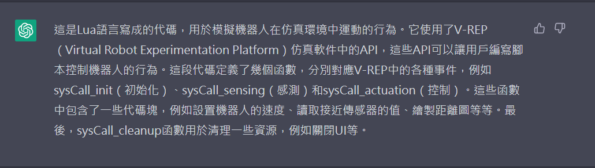
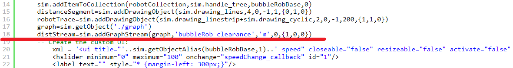

w3 <<
Previous Next >> Dynamic site
w4-note
1.在泡泡球機器人中使用何種程式碼?
Lua語言。由巴西里約熱內盧天主教大學的一個研究團隊所開發，使用了 V-REP 仿真軟件中的 API ，是一種輕量級、高效、可擴展的腳本語言，被廣泛用於遊戲開發、嵌入式系統、Web應用、科學計算等領域。

2.這段 Lua 程式碼中哪一行是控制泡泡球機器人運行的間距 ?
第18行中 clearance 為間隙，單位是 meter 公尺。

3..在 CoppeliaSim 中，scene 與 model 有何不同 ?
兩者都是表示場景中的物體，但一個 scene 中可以有多個 model ，一個 model 卻只屬於一個 scene。
scene 通常代表模擬仿真場景，例如：燈光、物體、傳感器、環境等等。
model 代表單獨一個物體，例如：機器人、物體、傳感器等等，通常包含自身的屬性、位置、旋轉、網格模型等等特性。

4..在 CoppeliaSim scene 中，何謂 clean model ?
clean model 是一個工具，可以刪除未使用的對象和場景元素，壓縮模型文件大小，將模型的場景數據進行優化和精簡，從而提高模擬效率。在 CoppeliaSim 中通過點擊 File > Clean Model 打開 Clean Model 工具。
5..CoppeliaSim 的 .ttt 檔案格式與 .simscene.xml 檔案格式有何不同 ?
w3 <<
Previous Next >> Dynamic site